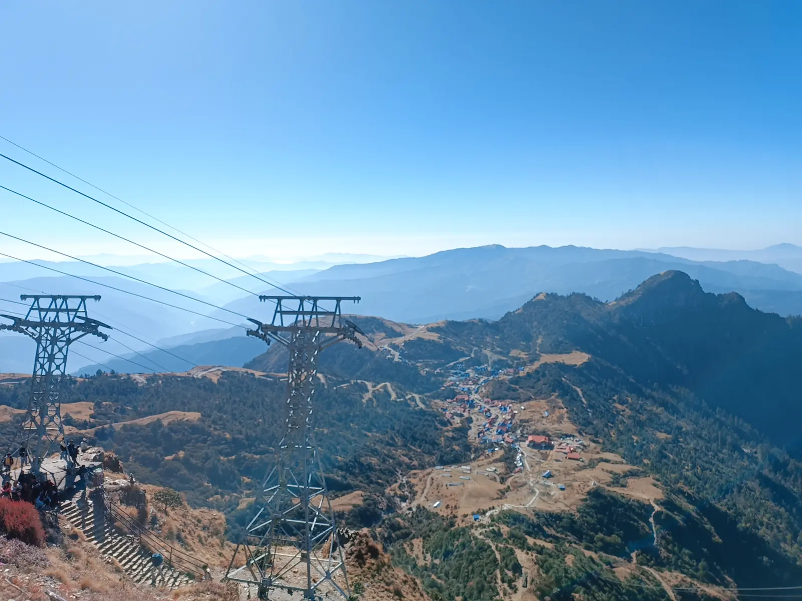

Akhilesh
First-year computer science student at Kathmandu University. I build small simulations to check whether I understand how something works.
Run the simulatorGravity
One star, one planet, and Newton's law of universal gravitation. Change how strong gravity is, how heavy the star is, or how fast the planet starts, then reset the orbit. Start slow and the planet falls toward the star. Start fast enough and it escapes.
How force becomes motion
Every frame, the simulator works out the pull between the two bodies, splits it into x and y parts, and uses that to change the planet's velocity and then its position. The original is a desktop program written with Pygame.
Download gravity.py# Newtonian gravity
force = (G * M_STAR * M_PLANET) / distance_squared
force_x = force * dx / distance
force_y = force * dy / distance
acceleration_x = force_x / M_PLANET
acceleration_y = force_y / M_PLANETPhotographs

About
I'm a first-year computer science student at Kathmandu University. I like to learn something by building a small version of it and seeing where it breaks. The gravity simulator started that way.
It's the only project on this site because it's the only one I've finished. The next one goes here when it's done.